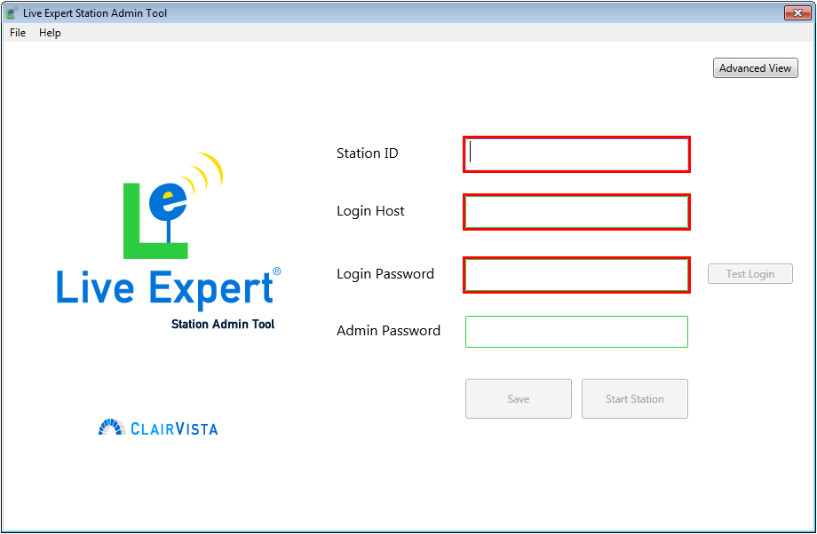
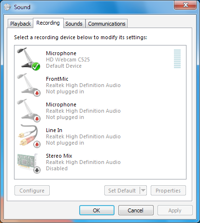

Primary and Secondary Display¶
In the two-display LE Station mode the top display must be set as the primary display and the bottom display is set as the secondary display in the Windows Display Properties.
| Name | Description |
|---|---|
| Operating System | Microsoft® Windows® 8/8.1, Microsoft Windows 7 |
| CPU Type | Core i5 or better |
| Network | 1 Mbps or better |
| Memory | 4 GB RAM |
| Display Resolution | HD: 1920x1080<br>Dual screen: 1280x1024<br>Single screen: 1280x1024 |
| Drivers | Device drivers for camera, microphone, barcode scanner, magnetic stripe reader, etc. |
The Live Expert Enterprise enables you to add new Stations and configure their settings accordingly. It is also where you will be able to retrieve a Station’s ID number, which you will need to specify with each installation.
Important
The Live Expert Enterprise is available at: https://liveexpert.net.

Before you can use a Station for the first time, start the LE Station Admin Tool. A shortcut can be found on the desktop after installation, or the application itself can be found in the same location as the LE Station installation.
An integer value representing the Station you created in the Live Expert Enterprise.
The hostname or ip address of the Live Expert Enterprise.
The password configured for the Station in the Live Expert Enterprise to sign in on startup.
A local administration password used to manage a Station’s camera device settings, view error messages, and access the Station’s log. Every LE Station should be configured to meet your individual use case. There are two types of configuration available to you, the Station’s Application Properties and the home screen’s Button Layout. The corresponding XML documents can be found in your LE Station’s Installation Directory.
You may also wish to configure your home screen’s button layout by editing ButtonLayout.Data.xml. Here, additional buttons can be added and configured similarly to the ones provided for you. Please note that each ButtonID and ExpertCategoryID should be unique, corresponding to an incremental integer and expertise category, respectively.
Call routing functionality can be configured by adding an additional value as follows:
<CallRoutingUrl>…</CallRoutingUrl>
The LE Station application gives customers the ability to print content seen on the content display on the printer attached to the LE Station PC. The LE Station will print to the printer designated as the default printer in Windows.
In the two-display LE Station mode the top display must be set as the primary display and the bottom display is set as the secondary display in the Windows Display Properties.
Dual display video cards have two video ports, either two DVI , two VGA or a mix of DVI and VGA. Plug the adapter for the top (primary) display into the video port labeled (1) or primary. Plug the adapter for the bottom (secondary) display into the port labeled (2) or secondary.
In the Settings tab of the Windows Display Properties Control Panel, ensure that Display 1 is directly above Display 2 as is shown in the figure below. Hovering the mouse over the second display icon should reveal a tool tip displaying, (0,1024). This indicates the second display is correctly positioned below the primary. The Screen resolution for both displays should be set to its native 1280 by 1024 pixels.
The standard Live Expert audio device implementation consists of a headset and microphone combination for the Expert Studio and an external conference speakerphone for the LE Station.
The following describes the properties that will need to be set in the Windows 7 Sound control panel along with tips for managing the audio input and output devices.
Once the devices are correctly set up in the Windows Sound & Audio Devices Properties, it is also important to confirm the default settings in the LE Station’s configuration file (DefaultSoundLevel and DefaultRecordingLevel). The purpose for these settings is that customer or employees may adjust the volume settings on the LE Station and the application will reset to these default values for the beginning of each video call to ensure a great experience for the customer and easily manageable experience for the expert agent.
In the following example, the Default devices are set to the AK4571 value, representing the Phoenix Duet Conference Phone used in an LE Station implementation.
Recording devices can be configured from another tab.
- General
- These settings likely do not need adjustment.
- Listen
- “Listen to this device” should not be checked.
- Levels
- The Volume properties does not likely need adjustment. The LE Station’s volume is controlled by the LE Station application. The LE Studio’s volume is expected to be manually managed by the agent via the Windows 7 volume controls.
- Advanced
- Depending upon the sound card being used, there may be advanced volume settings that provide better sound playback quality. If advanced settings exist, they should be tested for their effects on sound quality.
The Sound playback and Sound recording Default devices should be set to the appropriate device for each the LE Station and LE Studio. For the LE Station using an external conference speakerphone, the speakerphone device should be selected. For the Expert Studio using a combination microphone and headphone headset, the PC’s sound card should be selected if the headset uses a mini-jack interface or the headset name should be selected if the headset uses a USB interface.
Depending upon the device being used, other Volume and Advanced settings may exist and may enhance the quality of the sound. If other properties exist, they should be tested.
Repeat the steps used for the Audio properties for Voice playback and Voice recording properties. Additionally, it is recommended to perform the Test hardware routine using the Test hardware button on the Voice property panel.
The LE Station includes two security-related web browsing features: pop-up blocking and a URL blacklist.
The LE Station’s implementation of the Microsoft Internet Explorer rendering object blocks all pop-up whether they occur from anchor tags or javascript pop-ups.
In addition, the LE Station contains a configurable blacklist file. Any URL contained on a line in the blacklist will not be clickable in the LE Station web browser.
The blacklist is contained by default in C:\Program Files\LiveExpert\Data\blacklist.txt. The file is structured so that there should be only one URL per line. The application assumes a wildcard on both ends of the URL.
Examples:
clairvista.com (blocks anything with clairvista.com in the URL)clairvista.com/news/ (blocks anything in the news directory at clairvista.com)clairvista.com/news/download.exe (blocks the download.exe file in the news directory at clairvista.com)Most software—including Microsoft Windows, touchscreen utilities, and video camera tools—are not configured with settings ideal for a consumer-facing kiosk by default. The following items may help to enhance your end user experience, ease system maintenance, and reduce security risks.
In Windows 7, search for Adjust ClearType text and select Turn on ClearType.
Hide the Start menu and Task Bar Turn off balloon assistants Turn off screen saver Set Windows Explorer Start Navigation event sound to off Scaling, rotation
Turn off sleep and hibernate
Set desired header and footer for IE printing
Turn off Logitech Quick Assist
Many touchscreen drivers and software include the ability to register touch feedback sounds. In standard Live Expert deployments, those sounds are turned off as Live Expert provides visual feedback in the form of button state changes rather than audible sounds.
To reduce the change of clock drift and possible resulting speech and audio delays in extended video calls, keeps the clocks on the Windows PCs running the LE Station and LE Studio applications synchronized with a time server via the built-in Windows Internet Time capability or other time synchronization method.
To automate the startup of the LE Station, add a batch script to the Windows Startup folder to run the shortcut that created for you on the Windows Public Desktop:
startStation.bat
start "" "%PUBLIC%\Desktop\LE Station.lnk" /secondary
exit
startStation.bat (Legacy Windows XP Implementations Only)
start "" "%ALLUSERSPROFILE%\Desktop\LE Station.lnk" /secondary
exit
The following recommendations help secure a consumer-facing kiosk, reducing the risk of malicious behavior.
For consumer-facing kiosk use of the LE Station create an administrator account (e.g. “admin”) and a separate limited-user account (e.g. “kiosk”) using unique passwords. If prompted, choose to “Sign in without a Microsoft account” and create a “Local account”. Before continuing additional configuration, log-in once with the newly created user, “kiosk”.
Once you have installed the LE Station, it is strongly encouraged to set a password for local administration of the application. Run “StationAdminTool.exe” and update the value for “Admin Password”. The LE Station system controls dialog is accessible by double-clicking the lower right-hand corner of the application. The local administration password (see above) is required to be granted access to the application’s log, status, and camera configuration.
By setting up automatic logon, Microsoft Windows will always sign in as “kiosk” unless you hold the Shift key in anticipation of the logon screen.
HKEY_LOCAL_MACHINE\SOFTWARE\Microsoft\Windows NT\CurrentVersion\WinlogonEdit > New from the menu. Reference: http://technet.microsoft.com/library/cc939702| Name | Type | Data |
|---|---|---|
| AutoAdminLogon | String (REG_SZ) | 1 |
| DefaultUserName | String (REG_SZ) | kiosk |
| DefaultPassword | String (REG_SZ) | ******** |
| ForceAutoLogon | String (REG_SZ) | 1 |
The Group Policy Object Editor is a Microsoft Management Console (MMC) Snap-in that can further restrict access to the user “kiosk” via configuration of a Group Policy Object (GPO).
Warning
Any settings that you enable will be applied to ALL of the Computers, Users, and/or Groups included in its GPO. Please exercise caution.
Enabling these settings allow you to remove options other than “Log off” when receiving a Ctrl+Alt+Del key combination, exclusively for the user named “kiosk”:
- Lock the computer
- Change a password
- Start Task Manager
To hide fast user switching, create a separate GPO for the computer and enable “Hide entry points for Fast User Switching”. This setting will apply to all users including administrators.
After setting up your limited-user, “kiosk”, you can replace the standard interface to drastically limit the access a person has while signed in.
Warning
Incorrectly modifying the Windows Registry (e.g. modifying the Shell value of the Winlogon key under HKEY_LOCAL_MACHINE would effectively replacing the default user interface for all users including administrators) may cause serious issues if not done properly. Please exercise caution.
HKEY_LOCAL_MACHINE\SOFTWARE\Microsoft\Windows NT\CurrentVersion\IniFileMapping\system.ini\bootHKEY_CURRENT_USER\Software\Microsoft\Windows\CurrentVersion\ExplorerBecause the LE Station is designed to run in a consumer-facing kiosk application, it executes in a full-screen mode to reduce the likelihood that individuals can gain access to unauthorized components of the Windows environment. The LE Station also contains a component that will restart the application in the event that it fails. However, from time to time, retail store employees or service people may need access to the Windows XP environment. In these cases, the LE Station has a System Controls password form required to successfully stop the LE Station application. Double-clicking on the retail logo in the bottom right-hand corner of the screen will engage the System Controls dialog password form. The password is maintained by the Live Expert system administrator and set in the LE Station’s configuration file.
LE Station content such as images, buttons, messages and movies are stored in the Live Expert directory in Program Files. For each language, there are directories for each type of content in the respective language directory:
- English
C:\Program Files (x86)\LiveExpert\Languages\EN\- Spanish
C:\Program Files (x86)\LiveExpert\Languages\SP\
The following are the directories and their purposes:
…\Languages\**\Images\…\Languages\**\Movies\…\Languages\**\Movies\productMovies\To better ensure smooth system performance, restarting the Windows XP operating system once daily during off-peak times is recommended.
The Live Expert applications log various errors to the Windows Event Log. Warnings and Informational level messages are recording the Live Expert log in the user home directory.
The LE Station application can be started from a command line prompt. To stop the LE Station, it’s process must be stopped.
Any time new applications updates, configuration file changes or content updates are made, the application must be stopped and started for updates and changes to take effect.
The Windows operating system has a feature called DPI Scaling that increases the sizes of some elements like images and text. On most computers this defaults to 100%. In rare occasions the default may be greater, in which case it will need to be adjusted for the LE Station to display properly.
Open Appearance and Personalization in the Control Panel.
Select the Display category.
Select the option for Smaller - 100% (default)
{kind=link}
{kind=link}
{kind=link}
{kind=link}
{kind=link}
{kind=link}